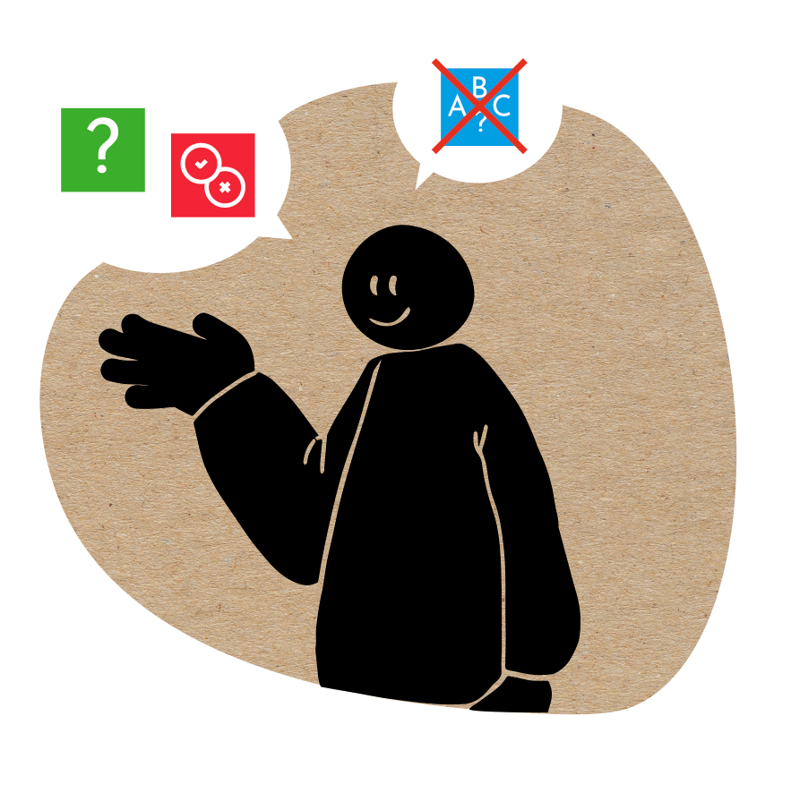

GAMELEON.EDU
Gameleon.edu é um jogo de tabuleiro personalizável, destinado a crianças do 1º ciclo do ensino básico. Foi criado para apoiar os professores na geração dos seus próprios jogos, com um design apelativo para as crianças desta faixa etária. Promove a utilização da gamificação em contexto de sala de aula.
A gamificação de conteúdos possibilita trabalhar de uma forma lúdica e inclusiva, vários temas de ensino, contribuindo de forma eficaz para a aprendizagem, para a motivação e interação social entre os alunos.
O JOGO É COMPOSTO POR:
4 tabuleiros (1 tabuleiro por equipa)
4 dados (1 dado por equipa)
4 peões (1 peão por equipa)
36 cartas de 3 categorias: 12 vermelhas, 12 azuis e 12 verdes
12 cartas especiais: 4 duplicadoras de pontos, 4 pedir ajuda aos colegas e 4 pedir ajuda ao professor
60 tokens: 20 vermelhos, 20 verdes e 20 azuis
CATEGORIAS DE PERGUNTAS/TABULEIRO

VERDADEIROOU FALSO

ESCOLHAMÚLTIPLA

ADIVINHA

ESCOLHEA CATEGORIA
As casas coloridas do tabuleiro, indicam a categoria da pergunta a ser respondida. Se a equipa acertar, ganha um token da cor respetiva. Na casa preta, a equipa pode escolher a categoria da pergunta.
CARTAS ESPECIAIS

CADA EQUIPA RECEBE 3 CARTAS ESPECIAIS
Carta duplicadora de pontos: a equipa recebe 2 tokens Carta para pedir ajuda ao professor: a equipa ganha 1 token Carta para pedir ajuda a outra equipa: cada equipa ganha 1 token

- Cada uma das 4 equipas lança o seu dado, para ver qual irá começa primeiro.
Joga-se no sentido dos ponteiros do relógio.
Cada equipa posiciona o seu peão na casa preta no canto inferior esquerdo.

- Lança-se o dado e a equipa escolhe a casa para onde quer ir.
Os peões podem deslocar-se na horizontal, para a esquerda e para a direita, e na vertical, para cima e para baixo.

- Quando uma categoria terminar, as equipas terão de escolher das restantes categorias disponíveis, movendo-se estrategicamente pelo tabuleiro.
- Se não tiverem a possibilidade de ir para uma casa das cores de perguntas disponíveis, passam a vez à próxima equipa.
- O professor deve avisar quando termina uma categoria. 
- Os alunos devem ser incentivados a jogarem estrategicamente as categorias de perguntas, para conseguirem ganhar mais pontos de uma determinada cor.
- No final, aconselhamos o debate, a reflexão sobre o tema e o esclarecimento de dúvidas